事前準備


你將會購買的每個標準陀螺商品會有一個QR code，稱作 Beycode，使用官方App掃瞄能獲得分數，稱作 Beypoint，累積後能抽獎，每1000分抽一次。大獎一年換替一次，小獎數次。

多陀螺套組／抽包中Beycode會隨說明書同梱，單陀螺的則隱藏在包裝盒上某角落。Beycode旁有小「A」字才能掃進港/台版App，否則只能掃進日版。所得的Beypoint相當於標準日元售價。首次啟動需要一個商品Beycode。東南亞地區的亦是A版。

想獲得更多分數兼測量發射力度，可購買BX-09 Beybattle Pass（五月起會有新一批）。先掃瞄它的Beycode，往後所掃瞄的陀螺Beycode都有bonus加乘。
購買到日版Beybattle Pass仍能測量力度，但因不是A版，不能掃瞄到港台App，亦未能享用bonus。
100
選擇裝備


對不少新加入的玩家，拉條發射器是較好上手。操作簡單，拉動感大。但往後要追求更高轉速，都轉用拉線（旋風）式。


標準的比賽對戰盤是Xtreme Stadium，而Infinity Stadium有時亦會使用，它們的最佳陀螺配置及策略會稍有不同。有電動裝置的盤－－不管電源開關－－會令陀螺動態大相逕庭，不能用作比賽的練習。

參加標準官方賽，需準備三個陀螺，每款組件只能出現一次。BX-12 Deck case為必需。有時容許自行設計版，但間隔及格式都需與官方相近。
本站用法：【部件】即Blade/Ratchet/Bit，【組件】是其下的分開能合規改造的部份（如CX Blade有3至4個組件），【零件】是工廠的最小一體生成品，如螺絲、POM塑膠片等。
消耗性
無論任何陀螺組件以至發射器，都是消耗品，隨時間使用而形狀、性能有所變化。組件有時候形狀變更圓，會更有利持久。
官方Regulation有提及，若本來的性能已變化，便需作出更換（相當主觀）。出戰官方比賽，任何裝備也預備後備品實屬基本。

 Simple型Ratchet以摩擦方式固定，每次扭動及被擊至爆裂都會削減Blade的塑膠。所以有陀螺手視為一次性，每次也用全新的Blade+Ratchet，確保最佳性能。
Simple型Ratchet以摩擦方式固定，每次扭動及被擊至爆裂都會削減Blade的塑膠。所以有陀螺手視為一次性，每次也用全新的Blade+Ratchet，確保最佳性能。

發射器拉線收不回來？拆開發射器後把最大的齒輪拿出然後把線繞回，再用一字螺絲批/起子沿箭頭方向轉數圈；保持螺絲批在橫孔上把齒輪按回發射器上，確保彈簧沒再鬆開。
模具變更
X代陀螺部件模具變更頗為頻繁，變更後通常能力有上修（如重量提升），少部份時是下修。

要從外盒辨認批次，可留意條碼旁有凹陷的刻印，格式是MDDYY，如上圖所顯示是2024-04-19批次（A=1月、B=2月…、L=12月），只需留意年與月。當然新一批次仍有可能使用舊模具。
比賽實戰
戰略可簡單分為及攻及防型。
陀螺構築
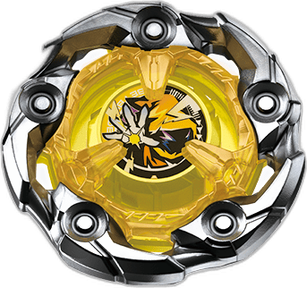
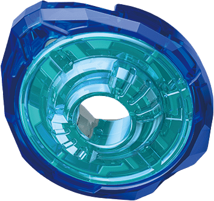
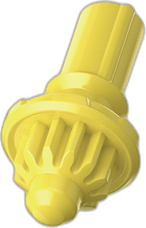
防型以1分Spin Finish為目標。對陀螺體質要求高，技術要求中等。要達到上級持久力，需購買大量同款陀螺，盡可能找出重心完美平衡又有重量。利用偏重心的Ratchet及旋轉180度再裝上Blade，可稍調節不佳的重心。
每層組件密合度亦是重點，鬆動的會令重心平衡度不穏，50高度的Ratchet也因此被設計成鬆動以削弱。所以多層的CX陀螺在找出完美解更難。
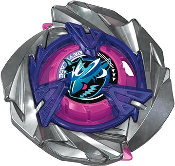
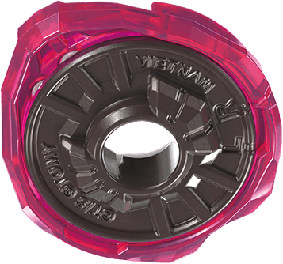
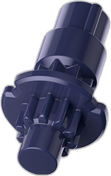
攻型以2至3分Burst、Over或Xtreme Finish為目標。對陀螺體質要求中等，技術要求高。
要求Blade夠重或Upper型設計，能把對手打出。又或低高度，以打擊對手Ratchet，使其爆裂為目標。
發射技術

防型戰略旨在把陀螺射向X Line以外兩個空位（洞口對面），或11點方向附近，以躲避右迴轉攻型對手頭段的最猛烈攻擊。
攻型要令陀螺軌跡能覆蓋對戰盤中大部份位置，需準確拿捏發射時拿著發射器的手的傾斜角度、移動方向及速度。當然能發揮的軌道也受陀螺的偏重心度及Bit所限。
Ratchet是令陀螺被Burst Finish（擊至爆裂）的機關；加上本代陀螺金屬在上，又因X Line關係要再抬高，高重心會容易倒下，因此只選擇偏低的高度。。
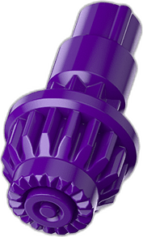
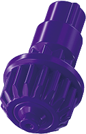
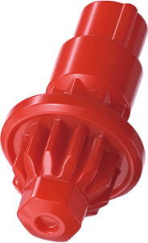
Bit的更迭速度較慢。攻型常用平面較幼的，或稍粗但齒數較少的。齒數雖決定X Dash的速度，可是對成人的力度來說，又粗又多齒的容易衝過快而自行離場，立即輸2/3分。防型則用有廣闊鈍角尖軸或小球軸。
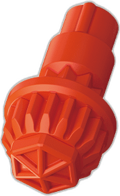
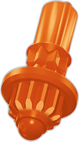
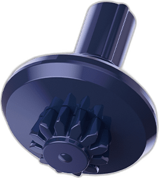
運氣
在標準盤的對戰以猜拳決定站位。遇上不熟悉的對手你只能猜測其陀螺出場次序及技巧。人亦不是機器不可能每次發射都完全一樣。這些剩下的差異成為運氣成份。